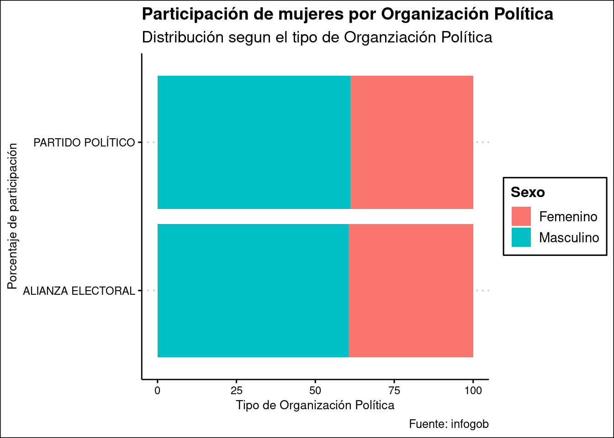
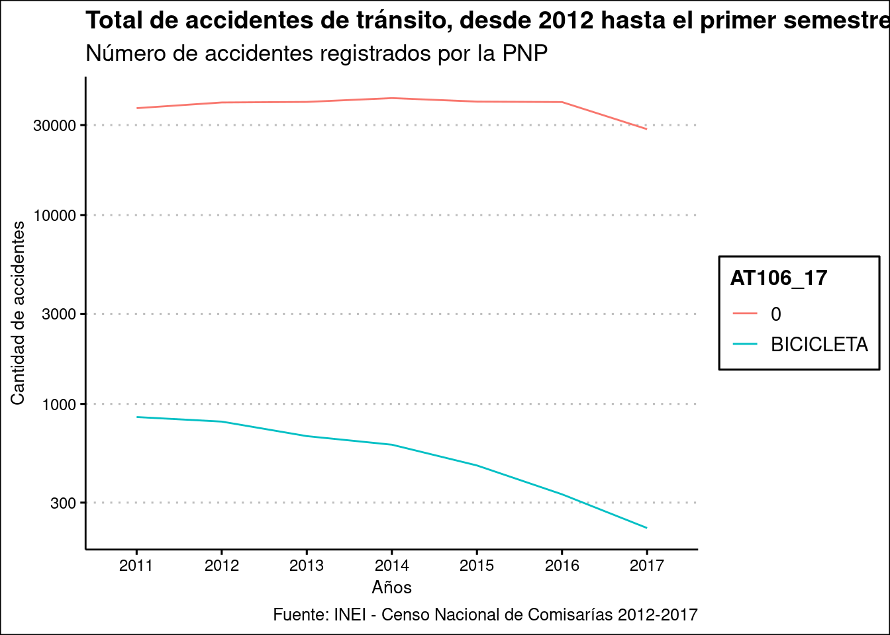

Capítulo 5 Trabajo de Sandra
5.1 Bases de datos a usar
library(readxl)
library(dplyr)
library(ggplot2)
library(ggthemes)
library(haven)5.2 A continuación, se han seleccionado solamente las variables relevantes.
5.3 Modificación del nombre de una variable:
En algunos casos, como en la base del año 2012, la variable AT106_17 tenía otro nombre, por un tema de variables adicionales que se incluyeron ese año en la encuesta y que, por ende, cambiaron la numeración secuencial. Es necesario renombrar la variable para poder cruzarla con los demás años.
base2012 <- read_sav("data/2012_05_CENACOM02_CAP100.sav")
base2012 <- base2012 %>%
select(UBIGEO, AT103_A, AT105, AT106_15, AT106_15_CANT, AT108, AT108_1, AT108_2, AT108_3)
base2012 <- base2012 %>%
rename(
AT106_17 = AT106_15,
AT106_17_CANT = AT106_15_CANT
)base2013 <- read_sav("data/2013_04_ATCapitulo100.sav")
base2013 <- base2013 %>%
select(UBIGEO, AT103_A, AT105, AT106_17, AT106_17_CANT, AT108, AT108_1, AT108_2, AT108_3)base2014 <- read_sav("data/2014_04_AT_CAP100.SAV")
base2014 <- base2014 %>%
select(UBIGEO, AT103_A, AT105, AT106_17, AT106_17_CANT, AT108, AT108_1, AT108_2, AT108_3 )base2015 <- read_sav("data/2015_05_AT_Capitulo_100.sav")
base2015 <- base2015 %>%
select(UBIGEO, AT103_A, AT105, AT106_17, AT106_17_CANT, AT108, AT108_1, AT108_2, AT108_3 )
base2015 <- base2015 %>%
mutate(AT103_A = as.character(AT103_A))5.4 Modificación del nombre de una variable:
En algunos casos, como en la base del año 2016, la variable AT106_17 tenía otro nombre, por un tema de variables adicionales que se incluyeron ese año en la encuesta y que, por ende, cambiaron la numeración secuencial. Es necesario renombrar la variable para poder cruzarla con los demás años.
base2016 <- read_sav("data/2016_A_T_Capitulo 100.sav")
base2016 <- base2016 %>%
select(UBIGEO, AT103_A, AT105, AT106_16, AT106_16_CANT, AT108, AT108_1, AT108_2, AT108_3 )
base2016 <- base2016 %>%
rename(
AT106_17 = AT106_16,
AT106_17_CANT = AT106_16_CANT
)5.5 Modificación del nombre de una variable:
En algunos casos, como en la base del año 2017, la variable AT106_17 tenía otro nombre, por un tema de variables adicionales que se incluyeron ese año en la encuesta y que, por ende, cambiaron la numeración secuencial. Es necesario renombrar la variable para poder cruzarla con los demás años.
base2017 <- read_sav("data/2017_A_T_Capitulo 100.sav")
base2017 <- base2017 %>%
select(UBIGEO, AT103_A, AT105, AT106_16, AT106_16_CANT, AT108, AT108_1, AT108_2, AT108_3 )
base2017 <- base2017 %>%
rename(
AT106_17 = AT106_16,
AT106_17_CANT = AT106_16_CANT
)5.6 Creación de la base general 2012-2017
basegeneral <- bind_rows(
base2012,
base2013,
base2014,
base2015,
base2016,
base2017
)5.7 Conversión de las columnas “labelled” a “factor”
basegeneral <- as_factor(basegeneral)head(basegeneral,20)## # A tibble: 20 x 9
## UBIGEO AT103_A AT105 AT106_17 AT106_17_CANT AT108 AT108_1 AT108_2 AT108_3
## <chr> <chr> <fct> <fct> <dbl> <fct> <dbl> <dbl> <dbl>
## 1 100601 2011 Atropello 0 NA No fatal NA 1 1
## 2 100601 2011 Colisión 0 NA No fatal NA 1 1
## 3 100601 2011 Colisión 0 NA No fatal NA 1 1
## 4 100601 2011 Colisión y fuga 0 NA No fatal NA 2 1
## 5 100601 2011 Colisión y fuga 0 NA Solo daños materiales NA NA 2
## 6 100601 2011 Colisión 0 NA No fatal NA 2 1
## 7 100601 2011 Colisión 0 NA No fatal NA 2 1
## 8 100601 2011 Colisión 0 NA No fatal NA 1 1
## 9 100601 2011 Atropello 0 NA No fatal NA 1 1
## 10 100601 2011 Colisión 0 NA No fatal NA 1 1
## 11 100601 2011 Colisión 0 NA No fatal NA 1 1
## 12 100601 2011 Atropello y fuga 0 NA No fatal NA 1 1
## 13 100601 2011 Colisión 0 NA No fatal NA 4 0
## 14 100601 2011 Atropello 0 NA No fatal NA 1 1
## 15 100601 2011 Colisión 0 NA Solo daños materiales NA NA 2
## 16 100601 2011 Colisión 0 NA Solo daños materiales NA NA 2
## 17 100601 2011 Choque 0 NA Solo daños materiales NA NA 1
## 18 100601 2011 Caída de pasajero 0 NA No fatal NA 1 1
## 19 100601 2011 Colisión 0 NA No fatal NA 2 2
## 20 100601 2011 Despiste 0 NA Solo daños materiales NA NA 15.8 Total de accidentes registrados por la PNP, desde 2012 al primer semestre del 2017
accidentesgeneral <- basegeneral %>%
count(AT103_A) %>%
group_by(AT103_A) %>%
print(accidentesgeneral)## # A tibble: 7 x 2
## # Groups: AT103_A [7]
## AT103_A n
## <chr> <int>
## 1 2011 37740
## 2 2012 40333
## 3 2013 40475
## 4 2014 42297
## 5 2015 40418
## 6 2016 40060
## 7 2017 287515.9 Total de accidentes que involucraron una bicicleta, desde 2012 al primer semestre del 2017
accidentesbici <- basegeneral %>%
filter(AT106_17 == "BICICLETA") %>%
count(AT103_A, AT106_17)%>%
group_by(AT103_A) %>%
print(accidentesbici)## # A tibble: 7 x 3
## # Groups: AT103_A [7]
## AT103_A AT106_17 n
## <chr> <fct> <int>
## 1 2011 BICICLETA 852
## 2 2012 BICICLETA 806
## 3 2013 BICICLETA 675
## 4 2014 BICICLETA 608
## 5 2015 BICICLETA 472
## 6 2016 BICICLETA 332
## 7 2017 BICICLETA 2205.10 Gráfico del total de accidentes de tránsito que involucraron a una bicicleta, desde 2012 hasta el primer semestre de 2017
accidentesbici <- accidentesbici %>%
ggplot(aes(AT103_A,
n,
group = AT106_17)) +
geom_line()
accidentesbici +
theme_clean() +
labs(
title = "Accidentes que involucraron a una bicicleta, desde 2012 hasta el primer semestre de 2017",
subtitle = "Número de accidentes registrados por la PNP",
caption = "Fuente: INEI - Censo Nacional de Comisarías 2012-2017",
x = "Años",
y = "Cantidad de accidentes"
)
5.11 Gráfico del total de accidentes de tránsito, desde 2012 hasta el primer semestre de 2017
accidentesgeneral <- basegeneral %>%
count(AT103_A, AT106_17) %>%
group_by(AT103_A) %>%
ggplot(aes(AT103_A,
n,
color = AT106_17,
group = AT106_17)) +
geom_line()
accidentesgeneral +
scale_y_log10()+
theme_clean() +
labs(
title = "Total de accidentes de tránsito, desde 2012 hasta el primer semestre de 2017",
subtitle = "Número de accidentes registrados por la PNP",
caption = "Fuente: INEI - Censo Nacional de Comisarías 2012-2017",
x = "Años",
y = "Cantidad de accidentes"
)